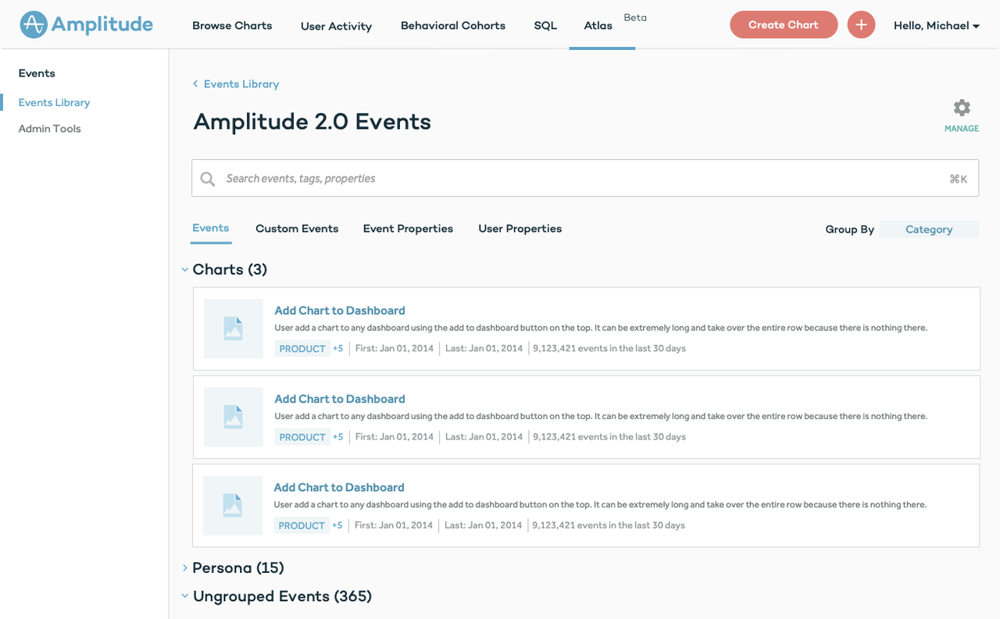
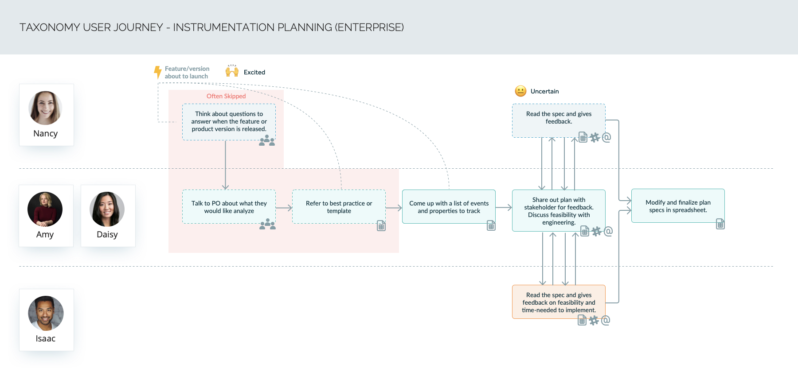

Background
Amplitude is a product analytics platform that helps teams understand why their users convert, engage and retain by enabling them to analyze their user behavior data. To get the maximum value out of the platform, a clean and understandable data taxonomy is absolutely essential.
The discovery of the data problem
Since the launch of Amplitude 2.0. We were conducting regular usability studies and qualitative user interviews to gather user feedback on the product. One of the common issue is that the users are having a hard time picking the right events for their analyses. This problem is so prevalent that it is mentioned in almost all of our user sessions.
As you can see in the screenshot, the first step of creating any Amplitude analysis is to select an event. Usually the users need to pick an event that represents the corresponding to the user action they’d like to analyze. Having issues here will result in the user not able to get any value out of Amplitude.
There are lots of reasons why the users are struggling with the event selection step. Our assumption is there are just too many events being tracked and it’s extremely difficult to keep track of all of them.
The MVP
With that assumption in mind, we started out by creating a MVP, an event dictionary, as our first solution to the problem. I designed an inVision prototype of a centralized event dictionary where all of the users within an organization can visit and read documentations on their data.
We then showed this MVP design to our customers during our continuous discovery research to get more concrete feedback and gather initial user reaction to this design.
-
We discovered a lot more problems in the data space:
- Taxonomy planning is a painful and manual process that uses many different tools. Because of that, most organization suffer from noisy data due to instrumentation errors, spammy data, different naming conventions, etc.
- Some organizations have an event taxonomy that make it hard to take advantage of Amplitude’s advanced analyses.
- Org admins have no control over sensitive PII data being sent.
The start of a new product
We quickly realized there is huge potential to design and build a product add-on to improve the experience of taxonomy design and management for our customers. This will also generate additional revenue opportunities for the company.
Personas
We synthesized our learnings in the initial research and decided on four personas that will directly benefit from.

We decide to make the Data Governor as the main persona and de-prioritize the Instrumentor persona, as most instrumentors won’t interact with Amplitude.
User Journey
I’ve also created user journey to visualize the current instrumentation workflow how different personas work together.
As you can see from the user journey, lots of tedious work are involved in the event planning and instrumentation workflow across multiple people and many different tools. Mistakes are made inevitably during this process and most of which won’t be discovered until they are already polluting the production data.
Three key feature areas
-
Based on the research we’ve narrowed down the features areas to:
- Allow novice users to be able to explore and understand the data tracked in their organizations
- Allow data governors and advocates to plan their taxonomy inside amplitude, and block any noisy data
- Allow data governors to manage, delete and fix their taxonomy issues after the data has been sent
We synthesized our learnings in the initial research and decided on four personas that will directly benefit from.
V1
At first, I decide to go with a three-tab approach (Discover, Plan, Manage), where each tab is designed with one primary persona and their goal in mind.
Feedback and (a lot) more iterations
I’ve then continue to iterated on the visual and information architect of the page, as well as explore new features based on user feedback.
Initial launch & learnings
This is the final version when we launched teh Taxonomy Beta
Once the beta version is launched, we conducted more user research and start gathering feedback.
-
We discovered this version has a few issues:
- It’s really hard for users to remember which section (Discover, plan or manage). Using the marketing names made it a lot worse.
- The Taxonomy page isn’t the best place for novice users to learn about events - there are just too many of them.
- Despite the good will of the advocates, only a small portion of the event descriptions are filled out. It takes too much effort!
Schema Editor
Based on the learnings from the first launch, we realized that Taxonomy is better to be optimized for data governors as the primary persona. We need a unified product where the data governor can do almost every thing in one place.
We decide to explore the idea of having a centralized schema that’s always up-to-date. The admins of the organizations can define and manage their taxonomy in the same place.

Data governors can edit the live schema to add new events and properties or prevent noisy and sensitive data from getting into their projects.
To solve the problem of novice users not able to easily selecting event, we believe the best solution is to meet the users where they are - in the product and analyses. We decide to show event definitions right when the users are picking event for their analyses.
Outcome
We’ve launched Schema Q3 2018. Schema and Taxonomy V1 together has been sold to over 290 teams by Q3 2019.
We’ve also received great user feedback qualitatively